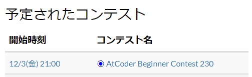
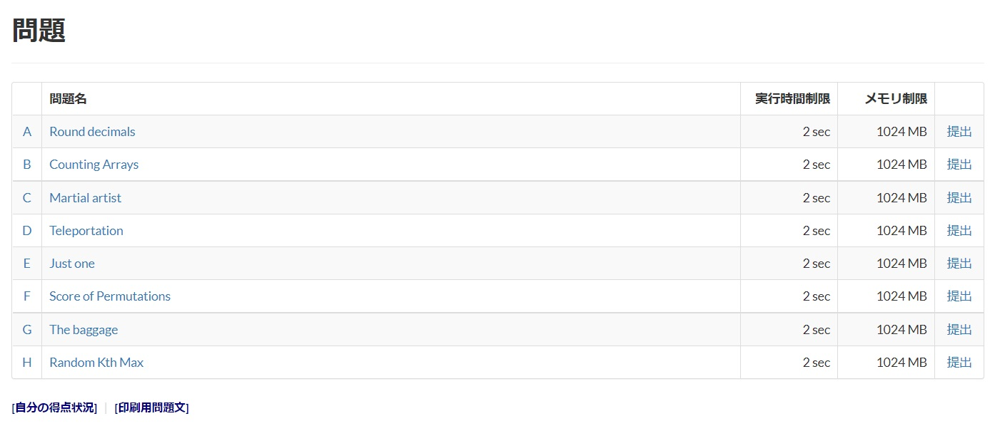
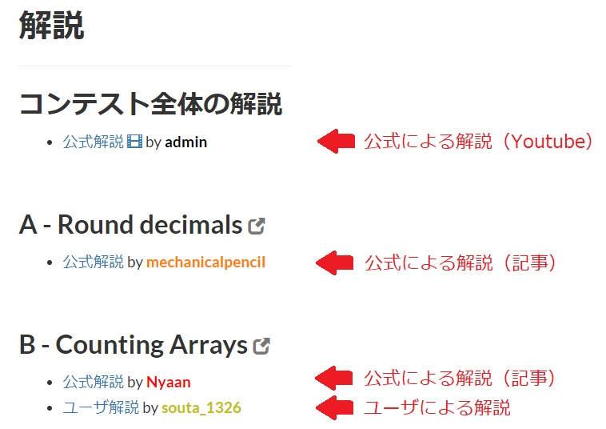

競技プログラミング講習/AtCoderとは
概要
AtCoderは世界最高峰の競技プログラミングサイトで、定期的にコンテストを開催しています。
重要語
AtCoder
競技プログラミングのサイト
必要語
今回の必要語はありません。
登録方法
それでは、AtCoderへの登録方法を見ていきましょう。
Step1
AtCoderにアクセスしたら、画面右上の「新規登録」をクリックしてください。

Step2
必須事項を入力してください。ユーザー名で「このユーザ名はすでに使用されています」と出ることがありますが、その場合は別の名前に変更してください。入力し終わったら、画面下の青い「新規登録」ボタンを押してください。これで、AtCoderへの登録は完了です。
コンテストへの参加方法
AtCoderには定期的に開催されている3種類のコンテストがあり、それぞれ
- AtCoder Beginner Contest(ABC)
- AtCoder Regular Contest(ARC)
- AtCoder Grand Contest(AGC)
です。このうち、ABCがほぼ週に1回の頻度で開催されており、比較的易しい問題も出題されますので、
まずはABCから参加することをおすすめします。
それでは、コンテストへの参加方法を見ていきましょう。
コンテストページ
AtCoderの左側に、「予定されたコンテスト」というところがあります。
ここに近々開催されるコンテストの日時と名称が記載されています。
画像の例だと、ABC175が8/15(土)の21:00~開催される予定です。
コンテストの詳細はコンテスト名をクリックするとコンテストページに飛ぶのでそこを見るとわかります。
ABC175はコンテスト時間100分、問題がA~Fの6問あって、配点は100-200-300-400-500-600だとわかります。
最近のABCはいつもこのような構成です。

参加登録
では、詳細が確認できたところで、参加登録をしていきます。
コンテストページ中央に「参加登録」という青いボタンがあるので、そこをクリックしてください。
クリックすると画面上部に「参加登録しました。」と出るので、これで参加登録は完了です。
企業コンテストなどの一部コンテストでは、参加登録の際にアンケートがある場合もあります。

コンテスト本番
できるだけ多くの問題を解き、できるだけ速く解くことを目標にしましょう。
開始
開催時間になるとポップアップが出現し、「問題一覧ページへ移動」をクリックすると6問の問題名が並んでいます。
この問題名をクリックすると、それぞれの問題文が表示されます。
基本的にはA問題が最も易しく、徐々に難しくなっていき、F問題が最も難しくなっています。
そのため、A問題から順に解いていくことをお勧めします。
しかし、たまに難易度が入れ替わることもあるので、順位表を確認して何人解いているかを参考にするといいかもしれません。

提出
問題文を読んで内容が把握出来たらVSCodeやAtom,メモ帳などのお好きなエディタで正解だと思うコードを書きましょう。
コードが書けたら、まずはサンプルを試しましょう。実行して試し、出力例と一致しているか確かめましょう。
一致していなければ何が間違っているはずなので、バグを取りましょう。
「コードテスト」のタブからもテストすることができますが、コンテスト中は大量のコードをジャッジしているので、結果が返ってくるのが少し遅いことがあります。
正解だという自信があれば提出しましょう。コードをCtrl+A,Ctrl+Cでコピーしたら、問題ページ下の「ソースコード」欄にCtrl+Vで貼り付けます。
言語がC++(GCC 9.2.1)になっているのを確認したら、下の「提出」ボタンで提出できます。
ジャッジ
提出をすると、これまでにこのコンテストで提出したコードの一覧が表示されます。
「結果」とあるのがジャッジの結果で、提出直後は灰色で「WJ」と表示されていますが、しばらくするとこれが変わります。
緑色で「AC」と表示されていれば正解で、この問題に対する得点を得ることができます。
正解したら、次の問題に取り組みましょう（ただし、正解しなければ次の問題に進めないというルールはないので、どの順番で解いても構いません）。
しかし、黄色で「WA」や「TLE」と表示されていれば不正解です。もう一度コードを見直し、バグを取りましょう。
そのほかのステータスや詳細については提出結果の見方をご覧ください。
終了
終了時間になるとポップアップが出現し、コンテストが終了した旨を伝えてくれます。
順位表で、最終的に自分が何位であったかを確認できます。
また、終了後しばらくすると「解説」タブができ、PDFとYouTubeで解説を見ることができます。
「コンテスト全体の解説」とあるのが基本的な公式解説ですが、問題ごとに「ユーザ解説」がある場合があります。
これは、Rated上限を超えたユーザーが投稿したもので、別解やより詳しい解説などが書いてあります。
解説を見ることで、解けなかったところや解けたところでもシンプルな解法がわかったりするので、ためになると思います。
さらに、Rated対象であればレートが更新されます。ABCはレート1999以下の人が対象です。
Rated対象はコンテストページに書いてあります。

練習問題
提出の練習としてpractice
contestのA問題Welcome to AtCoderをやってみましょう。
B問題はかなり難しい問題なのでやる必要はありません。